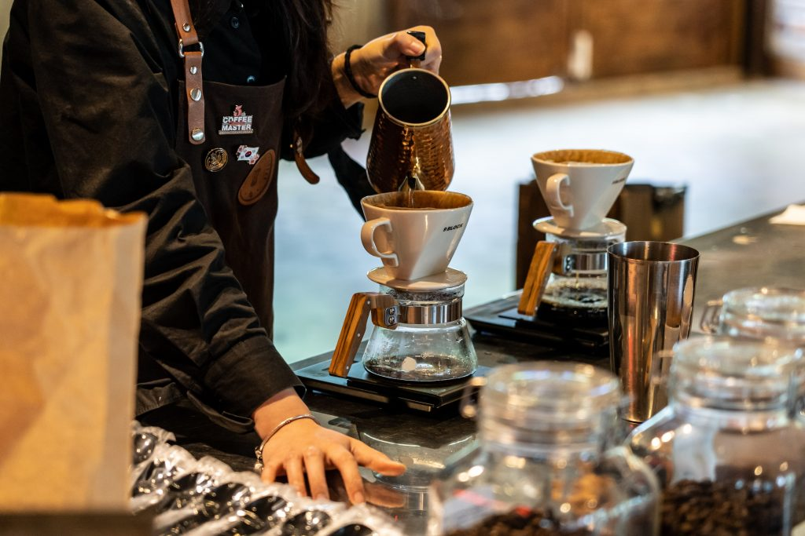

The History of
CafeKu

How it all started
Fakhri Nabil Putra, mahasiswa Politeknik Negeri Bandung jurusan Teknologi Pembangkit Tenaga Listrik, melihat kurangnya ruang ramah pelajar di Bandung. Terinspirasi oleh kebutuhan ini, ia mendirikan CafeKu, kafe yang menyediakan lingkungan produktif dan terjangkau untuk belajar, berdiskusi, dan berkembang.
Meski sibuk dengan studinya, Fakhri bekerja keras mewujudkan ide ini. Usahanya membuahkan hasil, dan CafeKu menjadi tempat favorit mahasiswa di Bandung. Kisah Fakhri membuktikan bahwa dengan semangat dan tekad, seorang mahasiswa bisa menciptakan perubahan besar.
See Profile